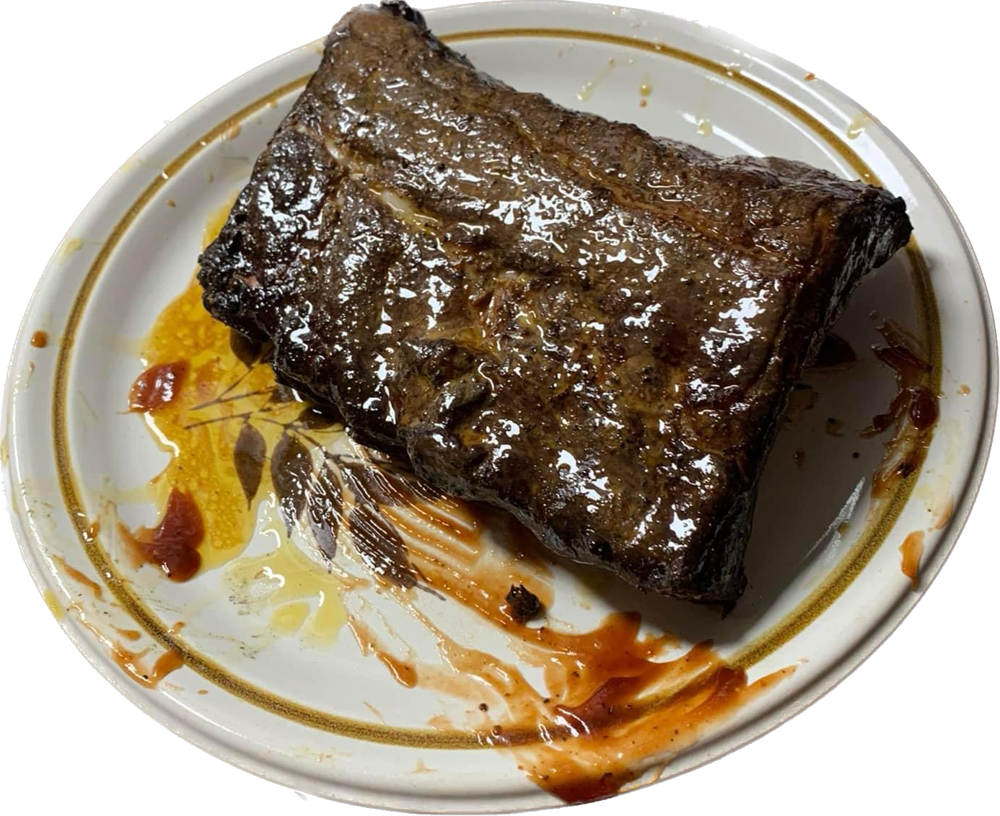

Smoked Barbeque Ribs

Description
My recipe is my households favorite for anytime simply because, well, its always rib time.This recipe will teach you how to appropriately smoke, baste, and complete your ribs to perfection.
Ingredients
- 1 rack of ribs
- 1/2 cup of Sweet Baby Rays Barbeque sauce
- 3 tbspn of butter, salted or unsalted.
- 1 smoker of choice
- 1 roll of aluminum foil
Steps
- Preheat the smoker to 200-225 degrees F or 93-107 degrees C. This can take some time and will also give us time to prep the ribs.
- Prep the ribs. Rip the membrane of the back of the ribs. At this time you can add a rub of your choice or simply let the smoke season for you.
- Get smokin'. Smoke the ribs for 3 hours.I usually use hickory, feel free to experiment around to your taste.
- Remove your ribs from the smoker and wrap in foil. Inside the foil add 2 tablespoons of butter and smoke for another 2 hours.
- Get saucy. Baste the ribs in Sweet Baby Rays Barbeque sauce, both sides, and return to the grill for an hour to get the sauce set
- Enjoy! Remove the ribs from the smoker and let them cool down, they'll be hot. 10-15 minutes should suffice. Enjoy your creation.
Return to main page